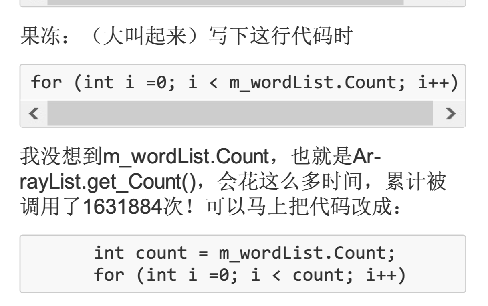
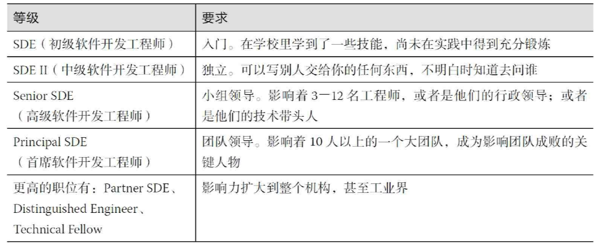

本书的简单介绍
最近十多年来，软件产业和互联网产业的迅猛发展，给众多计算机和软件专业的学生们提供了用武之地，同时也对大学软件工程的教育提出了很大的挑战。经典的软件工程理论和模式虽然仍有其价值，但是国外的教师和业界人士一直在探索新的理论和最佳实践。『构建之道』的作者是微软亚洲研究院的邹欣，在总结了自己的『做中学』的教学思想，在经过在清华，北航等学校的教学实践之后，总结出的这本书。
与学校里面一些传统的软件工程理论课程不同，这本书注重教学与实践的结合。并且特别注意和现在公司的工程实践结合。一本开始学习软件工程，可能是按照经典的瀑布模型，从需求分析，架构设计，系统实现，再到测试，以及最后的发布，和维护。这是一个正常的软件生命周期过程。但是在学生踏入职场的时候，最可能接触的并不是这些。可能先是维护一些现有的模块，修改小的bug，测试，重构，然后上线。然后逐渐接触大的模块，设计，实现，测试，上线。最后，等到一个学生，真正蜕变为一个合格的员工，才可能按照瀑布模型经历一次软件开发过程。这种从瀑布尽头一步一步上溯到源头，然后从源头流下去的模型，可以成为大马哈鱼模型。
本书的主要内容
本书的目录结构编排非常有意思。从之前提到的大马哈鱼洄游模型可以看到，一开始接触到的软件开发，并不是一泻千里的瀑布模型，而是只有自己的。所以一上来，就是从一个软件开发者的角度切入：个人技术，软件工程师的成长。然后才是逐渐扩展，四五章将的就是从小范围与其他软件开发者交流，比如结对编程，代码复审，到整个团队的建设，结构。然后才是需求分析，软件的设计与实现，软件的质量保证，最后是发布。中间穿插了项目经理是什么，敏捷开发流程，与终端用户相关的用户体验，已经对整个IT行业的思考，最后则是作者在实际中碰到的，比如如何评估绩效，软件工程师的道德观念等实际存在，但是教科书中一般不会提及的内容。
这里主要记录我在阅读过程中遇到的比较有感触的地方。
关于『1.1 软件=程序+软件工程』
从数据结构的第一课，我们就听说『程序=数据结构+算法』，但是，我们自己在学校中写出的小小的代码，与公司中的产出代码非常不同。而且我们自己写的代码，也几乎没有信心放到生产环境中调试。这应该是一个软件专业学生和一个软件工程师很大的不同。
作者提出的这个观点，软件其实，按照软件工程的流程实现的代码。与自己在学校随心所欲的代码不同。这是符合工程化的代码。
另外，更大一步，商业模式决定了一个软件公司的成败，软件企业=软件+商业模式。
从我们底层的角度，微软的操作系统+贩卖授权的模式，成就了微软。qq，免费使用，但是一些更高级的功能，需要额外收费；一些开源软件，个人可以免费使用，但是公司使用需要授权，比如docker。所以，一个公司的成功，很大一方面和公司的商业模式有关系。
关于『2.2效能分析工具』
作为一个以前端开发为生的程序猿，性能是一个羞于启齿，不愿谈论的话题。我觉得主要有这几个方面：
- js作为一个弱类型的、解释性的语言，就是慢。
- js就是一个在浏览器中负责点击表单，显示对话框的脚本语言，不需要多么强的性能。
- nodejs不是前端的吗？（by 后端同学）
这一节的书中以一个词汇频率计数的代码为例子，使用抽样（Sampling）或者代码注入（Instrumentation）两种方式，分析程序的调用栈，计算每个函数的运行时间和调用次数。比如这个例子
在Chrome的devTools中也有火焰图，可以实现类似的功能，查看函数的消耗时间比例。对于页面来说，还可以查看画面的帧数。
关于『3.2软件工程师的职业发展』
很多对于软件工程师的职级评价，就前端而言，干过三年，就可以号称高级。我觉得这个表格是值得参考的。

个人感悟和总结
作为一个开发软件的人，不能只是学会写代码，还要有一点世界的认知。对于软件工程的理解，这是随着不断的工作深入的。虽然是，软件工程没有『银弹』，但是总会有不断进步的技术出现，使得软件工程不断发展。
参考资料
[1] 『构建之道』作者的博客